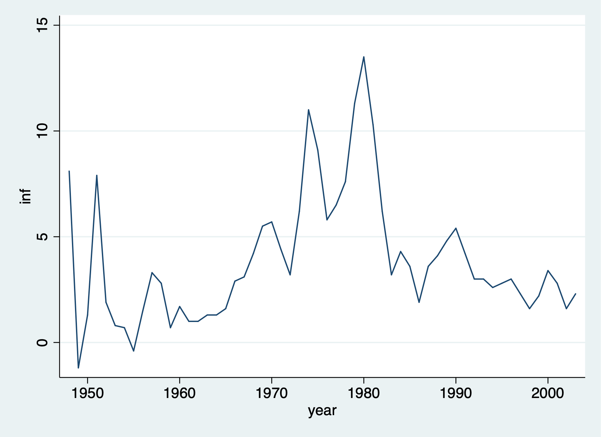

Chapter 1 Prepare for Forecasting
1.1 Graph the Time Series
We’ll use our Phillip’s Curve data to forecast unemployment one-step into the future
Set Time Series
/Users/Sam/Desktop/Econ 645/Data/Wooldridge
time variable: year, 1948 to 2003
delta: 1 unitUse tsline command to graph the time series

Graph of Inflation Rate
1.2 Train and Test
First we need to Generate training and test samples, so we’ll use the time series sequence until 1996 as our training data, and we’ll use 1997 to 2003 as our testing data.
gen test = 0
replace test = 1 if year >= 1997
label define test1 0 "training sample" 1 "testing sample"
label values test test1
list year unem inf test(7 real changes made)
+-------------------------------------------------+
| year unem inf test |
|-------------------------------------------------|
1. | 1948 3.8 8.1000004 training sample |
2. | 1949 5.9000001 -1.2 training sample |
3. | 1950 5.3000002 1.3 training sample |
4. | 1951 3.3 7.9000001 training sample |
5. | 1952 3 1.9 training sample |
|-------------------------------------------------|
6. | 1953 2.9000001 .80000001 training sample |
7. | 1954 5.5 .69999999 training sample |
8. | 1955 4.4000001 -.40000001 training sample |
9. | 1956 4.0999999 1.5 training sample |
10. | 1957 4.3000002 3.3 training sample |
|-------------------------------------------------|
11. | 1958 6.8000002 2.8 training sample |
12. | 1959 5.5 .69999999 training sample |
13. | 1960 5.5 1.7 training sample |
14. | 1961 6.6999998 1 training sample |
15. | 1962 5.5 1 training sample |
|-------------------------------------------------|
16. | 1963 5.6999998 1.3 training sample |
17. | 1964 5.1999998 1.3 training sample |
18. | 1965 4.5 1.6 training sample |
19. | 1966 3.8 2.9000001 training sample |
20. | 1967 3.8 3.0999999 training sample |
|-------------------------------------------------|
21. | 1968 3.5999999 4.1999998 training sample |
22. | 1969 3.5 5.5 training sample |
23. | 1970 4.9000001 5.6999998 training sample |
24. | 1971 5.9000001 4.4000001 training sample |
25. | 1972 5.5999999 3.2 training sample |
|-------------------------------------------------|
26. | 1973 4.9000001 6.1999998 training sample |
27. | 1974 5.5999999 11 training sample |
28. | 1975 8.5 9.1000004 training sample |
29. | 1976 7.6999998 5.8000002 training sample |
30. | 1977 7.0999999 6.5 training sample |
|-------------------------------------------------|
31. | 1978 6.0999999 7.5999999 training sample |
32. | 1979 5.8000002 11.3 training sample |
33. | 1980 7.0999999 13.5 training sample |
34. | 1981 7.5999999 10.3 training sample |
35. | 1982 9.6999998 6.1999998 training sample |
|-------------------------------------------------|
36. | 1983 9.6000004 3.2 training sample |
37. | 1984 7.5 4.3000002 training sample |
38. | 1985 7.1999998 3.5999999 training sample |
39. | 1986 7 1.9 training sample |
40. | 1987 6.1999998 3.5999999 training sample |
|-------------------------------------------------|
41. | 1988 5.5 4.0999999 training sample |
42. | 1989 5.3000002 4.8000002 training sample |
43. | 1990 5.5999999 5.4000001 training sample |
44. | 1991 6.8000002 4.1999998 training sample |
45. | 1992 7.5 3 training sample |
|-------------------------------------------------|
46. | 1993 6.9000001 3 training sample |
47. | 1994 6.0999999 2.5999999 training sample |
48. | 1995 5.5999999 2.8 training sample |
49. | 1996 5.4000001 3 training sample |
50. | 1997 4.9000001 2.3 testing sample |
|-------------------------------------------------|
51. | 1998 4.5 1.6 testing sample |
52. | 1999 4.1999998 2.2 testing sample |
53. | 2000 4 3.4000001 testing sample |
54. | 2001 4.8000002 2.8 testing sample |
55. | 2002 5.8000002 1.6 testing sample |
|-------------------------------------------------|
56. | 2003 6 2.3 testing sample |
+-------------------------------------------------+1.3 AR(1) and VAR models
We’ll use two models to forecast unemployment:
- AR(1) model: Just a 1-year lag of unemployment
- VAR model: 1-year lag of unemployment and 1-year lag of inflation
Run the regressions using training data
OLS AR-1
Run the model with a 1-year lag in unemployment
Source | SS df MS Number of obs = 48
-------------+---------------------------------- F(1, 46) = 57.13
Model | 62.8162728 1 62.8162728 Prob > F = 0.0000
Residual | 50.5768515 46 1.09949677 R-squared = 0.5540
-------------+---------------------------------- Adj R-squared = 0.5443
Total | 113.393124 47 2.41261967 Root MSE = 1.0486
------------------------------------------------------------------------------
unem | Coef. Std. Err. t P>|t| [95% Conf. Interval]
-------------+----------------------------------------------------------------
unem |
L1. | .7323538 .0968906 7.56 0.000 .537323 .9273845
|
_cons | 1.571741 .5771181 2.72 0.009 .4100629 2.73342
------------------------------------------------------------------------------VAR
We will add a 1-year lag in inflation along with our 1-year lag in unemployment
Source | SS df MS Number of obs = 48
-------------+---------------------------------- F(2, 45) = 50.22
Model | 78.3083336 2 39.1541668 Prob > F = 0.0000
Residual | 35.0847907 45 .779662015 R-squared = 0.6906
-------------+---------------------------------- Adj R-squared = 0.6768
Total | 113.393124 47 2.41261967 Root MSE = .88298
------------------------------------------------------------------------------
unem | Coef. Std. Err. t P>|t| [95% Conf. Interval]
-------------+----------------------------------------------------------------
unem |
L1. | .6470261 .0838056 7.72 0.000 .4782329 .8158192
|
inf |
L1. | .1835766 .0411828 4.46 0.000 .1006302 .2665231
|
_cons | 1.303797 .4896861 2.66 0.011 .3175188 2.290076
------------------------------------------------------------------------------